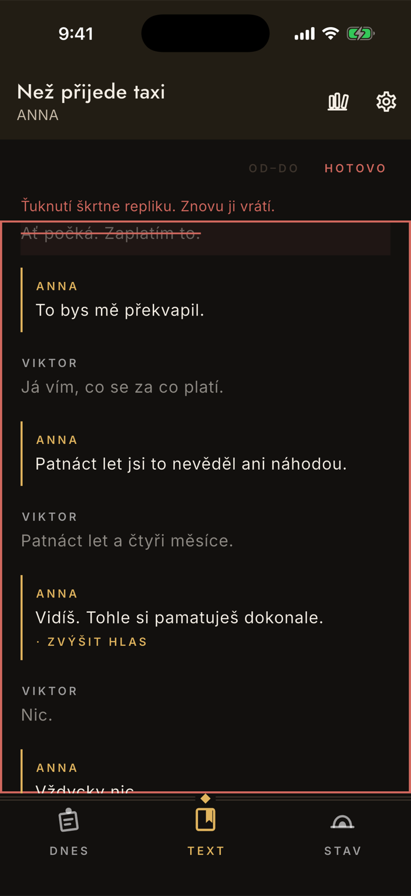
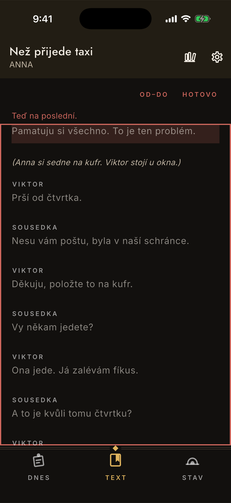
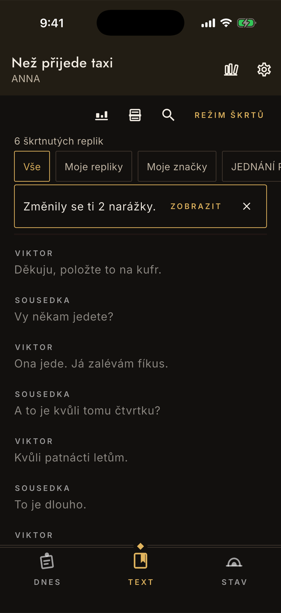

Text
Škrty a jak s nimi zacházet
Režisér škrtá a ty to musíš dostat do textu, ze kterého se učíš — jinak se naučíš věty, které se nehrají. Škrtání má proto v appce vlastní režim: nedá se udělat omylem a nedá se udělat nevratně.
Režim škrtů
Zapneš režim, pak už jen ťukáš
Mimo režim ťuknutí otevírá repliku. V režimu škrtů ji ťuknutí škrtne — a druhé ťuknutí vrátí. Že jsi v něm, poznáš podle karmínového rámu kolem textu.
Ťuknutí znamená pořád totéž
Žádné podržení, žádné potvrzování. Telefon navíc krátce cukne, takže se dá škrtat i bez pohledu na displej — na zkoušce se koukáš na režiséra.
Škrtnutá replika zůstane vidět
Přeškrtnutá, ztlumená, se slabě karmínovým podkladem. Nezmizí — režiséři škrty vracejí a ty musíš vědět, co tam bylo.
Hotovo režim vypne
Mimo režim pak nad textem svítí počet škrtnutých replik, ať víš, kolik jich v textu je.

Rozsah
Od–do, když padne celá pasáž
„Škrtáme od tvého vstupu po odchod sousedky" je běžná věta. Na to je přepínač Od–do: ťukneš na první repliku, pak na poslední, a celý rozsah se vyřídí naráz.
Appka ti říká, co čeká
Nejdřív „Ťukni na první repliku rozsahu.", po prvním ťuknutí „Teď na poslední." První replika se podbarví, ať víš, odkud to bereš.
Rozsah je vždycky jeden směr
Buď se celý škrtne, nebo celý vrátí — podle toho, jaká byla první replika. Nikdy se nepřepíná kus po kuse, takže výsledek je předvídatelný. Funguje i pozpátku, od pozdější repliky k dřívější.
Pozor na filtr
Rozsah pracuje se všemi replikami mezi krajními, ne jen s těmi, které máš právě zobrazené. Když máš zapnuté „Moje repliky", škrtnou se i cizí repliky mezi nimi — a je to tak správně, protože škrtá se pasáž hry, ne tvoje řádky.

Narážky
Škrt v cizí replice mění tvůj nástup
Tohle je ta nepříjemná část škrtů: když se škrtne replika před tvou, nastupuješ najednou po něčem jiném. Text umíš, ale narážku ne — a to se pozná až na jevišti.
Appka to spočítá sama
Po každé změně škrtů porovná, jak nástup vypadal předtím a jak teď. Nad textem se objeví pruh s počtem změněných narážek.
Pruh počká, dokud ho nezavřeš
Drží se i po přepnutí obrazovky a počítá souhrn od chvíle, kdy jsi ho naposled zavřel — ne jen dopad posledního ťuknutí. Po půlhodině škrtání tedy uvidíš všechny narážky, které se ti tím změnily, ne poslední dvě. Škrt, který jsi mezitím vrátil, se v součtu neobjeví.
Zobrazit vypíše které
Seznam replik, které teď nastupují po něčem jiném — a dril je postrčí nahoru, ať na ně narazíš dřív než na zkoušce. Tenhle výpis je v plné verzi; upozornění i počet vidíš i bez ní.

Co škrt dělá a co nedělá
Škrt není mazání
Škrtnutá replika zůstane v textu vidět a kdykoli ji vrátíte. Nepřijdete ani o postup v učení — kdyby režisér škrt zrušil, replika se vrátí do drilu s tím, co jste na ní nadrilovali. Mazání je něco jiného a je na jiném místě: v panelu opravy repliky, pro řádky, které do hry vůbec nepatří.
Škrtnuté repliky z drilu vypadnou
To je celý smysl. Nezkoušíte text, který se nehraje, a nezkreslují vám procento — ze jmenovatele vypadnou taky. Po větším škrtání se tedy procento může zvednout, aniž byste cokoli drilovali.
Škrtat jde i mimo režim
V panelu u repliky je tlačítko Škrtnout a u škrtnuté Vrátit škrt. Hodí se na jednu repliku, o které se rozhodne mimochodem. Režim škrtů je na situaci, kdy režisér diktuje pasáž za pasáží.
Zatemnění a škrtání se nekombinují
Když vstoupíte do režimu škrtů se zapnutým zatemněním, ťuknutí na zakrytou repliku ji škrtne, ne odkryje. Před škrtáním si zatemnění vypněte, ať víte, do čeho ťukáte.
Škrty se dají poslat souboru
Jeden člověk zapíše škrty a ostatní si je zapracují do vlastní kopie — přes QR kód nebo přes schránku. Přenáší se jen seznam změn, nikdy text hry. Je to v plné verzi a má to vlastní návod.
Proč má škrtání vlastní režim
Protože ťuknutí nemůže znamenat dvě věci. Ve čtečce otevírá repliku, v režimu škrtů ji škrtne — a mezi tím je vidět karmínový rám, aby nebylo pochyb, ve kterém jste. Stejný důvod má i samostatný přepínač Od–do: kdyby se rozsah zapínal střídáním ťuknutí, nedalo by se škrtat poslepu, a právě to je na zkoušce potřeba.
Škrtání je zdarma a zůstane. Je to divadelní realita, ne funkce — bez škrtů by se appka nedala použít na žádné skutečné inscenaci.
Zbytek čtečky
Filtry, hledání, poznámky ze zkoušky, štítky, zatemnění a přehled úseků na jevišti popisuje stránka Čtečka: text, poznámky a značky.
Zamotali jste se do škrtů, nebo něco nesedí?
contact@lukashula.cz